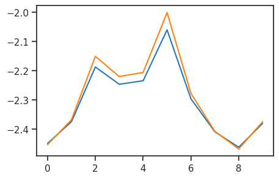
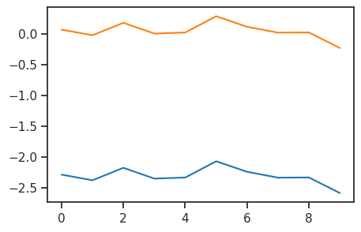
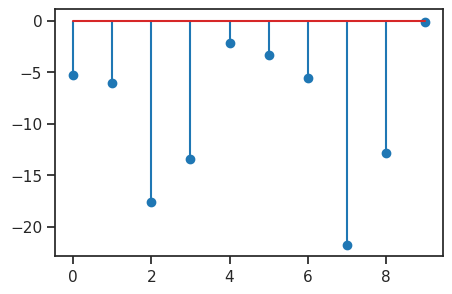
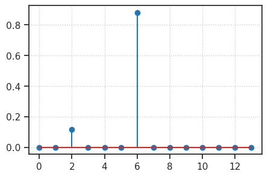

(04) CategoricalVAE#
Motivation: Test rsample. Does it really work?
Show code cell source
# HIDE CODE
import os, sys
from IPython.display import display
# tmp & extras dir
git_dir = os.path.join(os.environ['HOME'], 'Dropbox/git')
extras_dir = os.path.join(git_dir, 'jb-vase/_extras')
fig_base_dir = os.path.join(git_dir, 'jb-vae/figs')
tmp_dir = os.path.join(git_dir, 'jb-vae/tmp')
# GitHub
sys.path.insert(0, os.path.join(git_dir, '_PoissonVAE'))
from analysis.eval import sparse_score
from figures.fighelper import *
from vae.train_vae import *
# warnings, tqdm, & style
warnings.filterwarnings('ignore', category=DeprecationWarning)
from rich.jupyter import print
%matplotlib inline
set_style()
device_idx = 0
device = f'cuda:{device_idx}'
model_type = 'categorical'
from base.distributions import dists, Categorical
cfg_vae, cfg_tr = default_configs('MNIST', model_type, 'conv+b|conv+b')
print(f"VAE:\n{cfg_vae}\n\nTrainer:\n{cfg_tr}")
VAE: {'dataset': 'MNIST', 'n_ch': 32, 'n_latents': 10, 'n_categories': 10, 'enc_type': 'conv', 'dec_type': 'conv', 'enc_bias': True, 'dec_bias': True} Trainer: {'temp_anneal_portion': 0.5, 'temp_anneal_type': 'lin', 'temp_start': 1.0, 'temp_stop': 0.1, 'lr': 0.002, 'epochs': 1000, 'batch_size': 200, 'warm_restart': 2, 'optimizer_kws': {'weight_decay': 0.0003}, 'grad_clip': 1000}
vae = MODEL_CLASSES[model_type](CFG_CLASSES[model_type](**cfg_vae))
tr = TrainerVAE(vae, ConfigTrainVAE(**cfg_tr), device=device)
vae.print()
print(f"{vae.cfg.name()}\n{tr.cfg.name()}_({vae.timestamp})\n")
tr.show_schedules()
+----------------+------------+ | Module Name | Num Params | +----------------+------------+ | CategoricalVAE | 6.3 Mil | | --- | --- | | stem | 352 | | enc | 4.9 Mil | | fc_enc | 25.7 K | | fc_dec | 103.4 K | | dec | 1.2 Mil | +----------------+------------+
categorical_c-10_MNIST_z-10_k-32_<conv+b|conv+b> mc_b200-ep1000-lr(0.002)_beta(1:0x0.5)_temp(0.1:lin-0.5)_gr(1000)_(2024_05_05,15:13)

vae.cfg.name()
'categorical_c-10_MNIST_z-10_k-32_<conv+b|conv+b>'
vae.cfg.runs_dir
'/home/hadi/Projects/PoissonVAE/runs/categorical_c-10_MNIST_z-10_k-32_<conv+b|conv+b>'
torch.sigmoid(vae.logits)
tensor([[[0.1000, 0.1000, 0.1000, 0.1000, 0.1000, 0.1000, 0.1000, 0.1000,
0.1000, 0.1000],
[0.1000, 0.1000, 0.1000, 0.1000, 0.1000, 0.1000, 0.1000, 0.1000,
0.1000, 0.1000],
[0.1000, 0.1000, 0.1000, 0.1000, 0.1000, 0.1000, 0.1000, 0.1000,
0.1000, 0.1000],
[0.1000, 0.1000, 0.1000, 0.1000, 0.1000, 0.1000, 0.1000, 0.1000,
0.1000, 0.1000],
[0.1000, 0.1000, 0.1000, 0.1000, 0.1000, 0.1000, 0.1000, 0.1000,
0.1000, 0.1000],
[0.1000, 0.1000, 0.1000, 0.1000, 0.1000, 0.1000, 0.1000, 0.1000,
0.1000, 0.1000],
[0.1000, 0.1000, 0.1000, 0.1000, 0.1000, 0.1000, 0.1000, 0.1000,
0.1000, 0.1000],
[0.1000, 0.1000, 0.1000, 0.1000, 0.1000, 0.1000, 0.1000, 0.1000,
0.1000, 0.1000],
[0.1000, 0.1000, 0.1000, 0.1000, 0.1000, 0.1000, 0.1000, 0.1000,
0.1000, 0.1000],
[0.1000, 0.1000, 0.1000, 0.1000, 0.1000, 0.1000, 0.1000, 0.1000,
0.1000, 0.1000]]], device='cuda:0')
torch.sigmoid(vae.logits).sum(-1)
tensor([[1., 1., 1., 1., 1., 1., 1., 1., 1., 1.]], device='cuda:0')
x, *_ = next(iter(tr.dl_vld))
x.shape
torch.Size([200, 1, 28, 28])
# with torch.inference_mode():
dist, z, y = vae(x)
x2p = tonp(dist.probs.ravel())
sns.histplot(x2p[x2p > 0.01], bins=np.linspace(0, 1, 101))
<Axes: ylabel='Count'>
loss = torch.sum((dist.rsample() - 1).pow(2))
loss.backward()
vae.stem.bias.grad
tensor([-29.6515, -46.2480, 5.2437, 21.2658, 113.2567, -13.7855, 19.9296,
-4.7984, 22.5497, 46.7027, 15.3849, 6.8394, -26.7323, 162.3295,
-58.8134, 13.6335, 58.8092, 30.2605, -12.6746, -15.3472, -38.8823,
41.3092, -0.3783, -48.2880, 20.0336, -40.6113, -3.5663, 119.4552,
-33.1864, -52.2635, -40.2610, 60.0013], device='cuda:0')
vae.probs.sum(-1)
tensor([[1., 1., 1., 1., 1., 1., 1., 1., 1., 1.]], device='cuda:0')
probs = torch.tensor([[0, 0, 0, 1, 0]], dtype=torch.float32)
c = Categorical(probs=probs, temp=0.8)
c.probs
tensor([[0., 0., 0., 1., 0.]])
from torch.distributions.utils import broadcast_all, clamp_probs
dists.utils.clamp_probs(probs)
tensor([[1.1921e-07, 1.1921e-07, 1.1921e-07, 1.0000e+00, 1.1921e-07]])
torch.round(c.logits, decimals=3)
tensor([[-15.9420, -15.9420, -15.9420, -0.0000, -15.9420]])
eps = torch.finfo(torch.float).eps
logits_eps = torch.logit(torch.clamp(c.probs, eps, 1-eps))
torch.round(logits_eps, decimals=3)
tensor([[-15.9420, -15.9420, -15.9420, 15.9420, -15.9420]])
torch.sigmoid(logits_eps)
tensor([[1.1921e-07, 1.1921e-07, 1.1921e-07, 1.0000e+00, 1.1921e-07]])
logits = torch.randn(123, 20, 10) * 0.1
# c = dists.RelaxedOneHotCategorical(temperature=1e-9, logits=logits)
c = Categorical(logits=logits, temp=0.8)
c.t
0.8
sns.histplot(tonp(c.logits.ravel()))
<Axes: ylabel='Count'>
sns.histplot(tonp(logits.ravel()))
<Axes: ylabel='Count'>
c.probs[0, 1]
tensor([0.0864, 0.0930, 0.1122, 0.1057, 0.1070, 0.1274, 0.1006, 0.0899, 0.0853,
0.0925])
torch.logit(c.probs)[0, 1]
tensor([-2.3588, -2.2770, -2.0686, -2.1349, -2.1215, -1.9243, -2.1905, -2.3151,
-2.3730, -2.2834])
plt.plot(tonp(c.logits[0, 1]));
plt.plot(tonp(torch.logit(c.probs[0, 1])) * 1.04);

logits = torch.randn(123, 20, 10) * 0.1
c = Categorical(logits=logits, temp=0.8)
probs = torch.sigmoid(logits)
eps = torch.finfo(torch.float).eps
probs_eps = torch.clamp(probs, eps, 1-eps)
logits_eps = torch.logit(probs_eps)
plt.plot(tonp(c.logits[0, 1]));
plt.plot(tonp(logits_eps[0, 1]));

c.logits - (logits - logits.logsumexp(dim=-1, keepdim=True))
tensor([[[0., 0., 0., ..., 0., 0., 0.],
[0., 0., 0., ..., 0., 0., 0.],
[0., 0., 0., ..., 0., 0., 0.],
...,
[0., 0., 0., ..., 0., 0., 0.],
[0., 0., 0., ..., 0., 0., 0.],
[0., 0., 0., ..., 0., 0., 0.]],
[[0., 0., 0., ..., 0., 0., 0.],
[0., 0., 0., ..., 0., 0., 0.],
[0., 0., 0., ..., 0., 0., 0.],
...,
[0., 0., 0., ..., 0., 0., 0.],
[0., 0., 0., ..., 0., 0., 0.],
[0., 0., 0., ..., 0., 0., 0.]],
[[0., 0., 0., ..., 0., 0., 0.],
[0., 0., 0., ..., 0., 0., 0.],
[0., 0., 0., ..., 0., 0., 0.],
...,
[0., 0., 0., ..., 0., 0., 0.],
[0., 0., 0., ..., 0., 0., 0.],
[0., 0., 0., ..., 0., 0., 0.]],
...,
[[0., 0., 0., ..., 0., 0., 0.],
[0., 0., 0., ..., 0., 0., 0.],
[0., 0., 0., ..., 0., 0., 0.],
...,
[0., 0., 0., ..., 0., 0., 0.],
[0., 0., 0., ..., 0., 0., 0.],
[0., 0., 0., ..., 0., 0., 0.]],
[[0., 0., 0., ..., 0., 0., 0.],
[0., 0., 0., ..., 0., 0., 0.],
[0., 0., 0., ..., 0., 0., 0.],
...,
[0., 0., 0., ..., 0., 0., 0.],
[0., 0., 0., ..., 0., 0., 0.],
[0., 0., 0., ..., 0., 0., 0.]],
[[0., 0., 0., ..., 0., 0., 0.],
[0., 0., 0., ..., 0., 0., 0.],
[0., 0., 0., ..., 0., 0., 0.],
...,
[0., 0., 0., ..., 0., 0., 0.],
[0., 0., 0., ..., 0., 0., 0.],
[0., 0., 0., ..., 0., 0., 0.]]])
samples = c.rsample()
samples.shape
torch.Size([123, 20, 10])
plt.stem(samples[3, 0])
<StemContainer object of 3 artists>
torch.argmax(c.logits[3, 0])
tensor(9)
plt.stem(c.logits[3, 0]);

np.round(tonp(c.probs[3, 0]).astype(float), 3)
array([0.005, 0.002, 0. , 0. , 0.113, 0.035, 0.004, 0. , 0. ,
0.841])
collections.Counter(np.round(tonp(samples.ravel()), 7))
Counter({0.0: 5877,
1e-07: 1008,
2e-07: 510,
3e-07: 308,
4e-07: 284,
5e-07: 232,
6e-07: 183,
7e-07: 138,
9e-07: 124,
8e-07: 120,
1e-06: 108,
1.1e-06: 101,
1.4e-06: 97,
1.2e-06: 93,
1.5e-06: 71,
1.6e-06: 68,
1.3e-06: 66,
1.7e-06: 64,
1.9e-06: 62,
2.1e-06: 59,
1.8e-06: 59,
2e-06: 56,
2.3e-06: 55,
2.5e-06: 55,
2.2e-06: 54,
2.7e-06: 49,
4e-06: 47,
3.1e-06: 47,
2.9e-06: 44,
3e-06: 43,
3.3e-06: 41,
2.8e-06: 40,
4.1e-06: 40,
3.2e-06: 40,
2.6e-06: 39,
2.4e-06: 35,
3.8e-06: 33,
3.6e-06: 32,
4.2e-06: 31,
4.3e-06: 29,
4.6e-06: 28,
3.4e-06: 28,
5e-06: 28,
4.9e-06: 27,
3.9e-06: 27,
7.6e-06: 27,
3.7e-06: 27,
5.2e-06: 27,
4.5e-06: 26,
6.7e-06: 26,
4.4e-06: 25,
5.4e-06: 24,
3.5e-06: 24,
5.9e-06: 24,
5.1e-06: 24,
7.3e-06: 23,
9.5e-06: 22,
4.7e-06: 22,
5.6e-06: 21,
4.8e-06: 21,
6e-06: 20,
6.9e-06: 20,
1.06e-05: 19,
8.5e-06: 19,
7.5e-06: 19,
8.4e-06: 19,
6.1e-06: 18,
7.1e-06: 18,
5.7e-06: 18,
7.2e-06: 18,
7.9e-06: 17,
6.2e-06: 17,
5.8e-06: 17,
5.3e-06: 17,
1.37e-05: 16,
1.12e-05: 16,
9.7e-06: 16,
5.5e-06: 16,
9.8e-06: 15,
7.4e-06: 15,
6.5e-06: 15,
9e-06: 15,
7e-06: 15,
1e-05: 14,
6.6e-06: 14,
6.3e-06: 14,
1.1e-05: 14,
7.7e-06: 14,
1.04e-05: 14,
1.07e-05: 14,
8e-06: 14,
7.8e-06: 13,
1.02e-05: 13,
8.2e-06: 13,
1.01e-05: 13,
8.8e-06: 13,
1.65e-05: 13,
1.0: 12,
1.42e-05: 12,
9.2e-06: 12,
8.1e-06: 12,
9.9e-06: 12,
8.3e-06: 12,
6.4e-06: 12,
8.6e-06: 12,
1.44e-05: 12,
9.4e-06: 12,
1.4e-05: 12,
1.19e-05: 12,
1.79e-05: 12,
3.13e-05: 11,
1.27e-05: 11,
1.18e-05: 11,
1.08e-05: 11,
1.21e-05: 11,
1.73e-05: 11,
6.8e-06: 11,
1.6e-05: 10,
9.3e-06: 10,
1.25e-05: 10,
1.16e-05: 10,
1.34e-05: 10,
1.76e-05: 10,
8.7e-06: 10,
8.9e-06: 10,
1.14e-05: 10,
1.13e-05: 10,
2.16e-05: 10,
1.61e-05: 10,
1.47e-05: 10,
1.53e-05: 9,
1.64e-05: 9,
2.44e-05: 9,
1.24e-05: 9,
1.15e-05: 9,
1.77e-05: 9,
2.18e-05: 9,
3.91e-05: 9,
1.49e-05: 9,
2.07e-05: 9,
1.2e-05: 9,
5.22e-05: 9,
1.38e-05: 9,
2.34e-05: 9,
1.23e-05: 9,
1.48e-05: 9,
1.52e-05: 9,
1.54e-05: 9,
1.11e-05: 9,
9.6e-06: 9,
1.39e-05: 9,
1.03e-05: 8,
1.97e-05: 8,
2.31e-05: 8,
1.66e-05: 8,
1.26e-05: 8,
1.45e-05: 8,
1.57e-05: 8,
2.43e-05: 8,
3.14e-05: 8,
2.84e-05: 8,
3.02e-05: 8,
3.89e-05: 8,
2.83e-05: 8,
2.38e-05: 8,
2.66e-05: 8,
1.93e-05: 8,
4.53e-05: 8,
9.1e-06: 8,
1.22e-05: 8,
2.22e-05: 8,
2.02e-05: 8,
1.3e-05: 8,
1.89e-05: 8,
1.28e-05: 8,
1.98e-05: 8,
2.97e-05: 8,
1.17e-05: 8,
1.5e-05: 8,
2.85e-05: 8,
1.81e-05: 7,
1.71e-05: 7,
3.24e-05: 7,
1.99e-05: 7,
3.04e-05: 7,
2.35e-05: 7,
2.28e-05: 7,
1.69e-05: 7,
1.09e-05: 7,
1.68e-05: 7,
1.94e-05: 7,
3.3e-05: 7,
2.52e-05: 7,
1.56e-05: 7,
3.46e-05: 7,
1.72e-05: 7,
1.51e-05: 7,
1.7e-05: 7,
2.61e-05: 7,
1.43e-05: 7,
2.96e-05: 7,
3.12e-05: 7,
1.32e-05: 7,
2.75e-05: 7,
3.47e-05: 7,
1.33e-05: 7,
1.78e-05: 6,
1.29e-05: 6,
0.0001044: 6,
1.75e-05: 6,
3.81e-05: 6,
3.21e-05: 6,
3.4e-05: 6,
4.38e-05: 6,
8.93e-05: 6,
3.95e-05: 6,
1.55e-05: 6,
3.05e-05: 6,
3.25e-05: 6,
2.36e-05: 6,
1.59e-05: 6,
3.07e-05: 6,
1.88e-05: 6,
4.99e-05: 6,
3.7e-05: 6,
2e-05: 6,
3.51e-05: 6,
1.74e-05: 6,
3.03e-05: 6,
2.98e-05: 6,
4.13e-05: 6,
2.46e-05: 6,
2.71e-05: 6,
5.87e-05: 6,
2.08e-05: 6,
3.62e-05: 6,
2.49e-05: 6,
2.54e-05: 6,
9.27e-05: 6,
2.23e-05: 5,
1.8e-05: 5,
3.53e-05: 5,
8.6e-05: 5,
5.15e-05: 5,
2.15e-05: 5,
2.03e-05: 5,
3.06e-05: 5,
6.09e-05: 5,
3.01e-05: 5,
2.88e-05: 5,
6.6e-05: 5,
6.75e-05: 5,
6.73e-05: 5,
2.09e-05: 5,
1.82e-05: 5,
6.57e-05: 5,
1.86e-05: 5,
4.68e-05: 5,
2.19e-05: 5,
2.56e-05: 5,
5.21e-05: 5,
4.63e-05: 5,
3.44e-05: 5,
4.03e-05: 5,
2.99e-05: 5,
2.93e-05: 5,
1.9e-05: 5,
0.0002883: 5,
1.84e-05: 5,
7.3e-05: 5,
4.02e-05: 5,
4.94e-05: 5,
1.31e-05: 5,
8.79e-05: 5,
3.8e-05: 5,
5.07e-05: 5,
2.45e-05: 5,
3.79e-05: 5,
3.97e-05: 5,
7.47e-05: 5,
2.33e-05: 5,
4.84e-05: 5,
2.05e-05: 5,
4.16e-05: 5,
3.33e-05: 5,
2.95e-05: 5,
2.86e-05: 5,
2.1e-05: 5,
3.56e-05: 5,
2.78e-05: 5,
1.05e-05: 5,
1.41e-05: 5,
2.01e-05: 5,
2.41e-05: 5,
3.28e-05: 5,
2.53e-05: 5,
4.18e-05: 5,
2.13e-05: 5,
2.4e-05: 5,
2.37e-05: 5,
6.37e-05: 5,
2.77e-05: 5,
5.14e-05: 5,
3.45e-05: 5,
8.03e-05: 5,
3.08e-05: 5,
3.96e-05: 5,
7.99e-05: 4,
3.86e-05: 4,
4.4e-05: 4,
3e-05: 4,
1.83e-05: 4,
0.0001183: 4,
4.28e-05: 4,
6.56e-05: 4,
5.9e-05: 4,
3.77e-05: 4,
6.06e-05: 4,
2.48e-05: 4,
1.91e-05: 4,
2.39e-05: 4,
4.33e-05: 4,
4.24e-05: 4,
0.0002052: 4,
8.56e-05: 4,
7.61e-05: 4,
3.29e-05: 4,
5.24e-05: 4,
3.52e-05: 4,
1.62e-05: 4,
5.99e-05: 4,
5.69e-05: 4,
5.08e-05: 4,
1.35e-05: 4,
7.46e-05: 4,
4.6e-05: 4,
5.12e-05: 4,
1.95e-05: 4,
4.19e-05: 4,
2.04e-05: 4,
2.12e-05: 4,
6.65e-05: 4,
4.98e-05: 4,
4.42e-05: 4,
3.19e-05: 4,
2.25e-05: 4,
5.06e-05: 4,
0.9999995: 4,
6.12e-05: 4,
2.74e-05: 4,
2.14e-05: 4,
7.66e-05: 4,
2.26e-05: 4,
3.83e-05: 4,
0.9999998: 4,
6.89e-05: 4,
2.76e-05: 4,
7.07e-05: 4,
4.8e-05: 4,
0.0001064: 4,
5.61e-05: 4,
3.78e-05: 4,
8.01e-05: 4,
0.000127: 4,
2.51e-05: 4,
0.0002813: 4,
4.93e-05: 4,
8.19e-05: 4,
2.47e-05: 4,
9.87e-05: 4,
2.89e-05: 4,
2.73e-05: 4,
4.56e-05: 4,
8.11e-05: 4,
0.999999: 4,
5.98e-05: 4,
3.61e-05: 4,
6.33e-05: 4,
7.02e-05: 4,
5.16e-05: 4,
1.67e-05: 4,
6.49e-05: 4,
0.0001234: 4,
3.48e-05: 4,
5.83e-05: 4,
0.0001231: 4,
3.26e-05: 4,
7.35e-05: 4,
1.92e-05: 4,
8.14e-05: 4,
8.23e-05: 4,
1.58e-05: 4,
2.72e-05: 4,
4.77e-05: 4,
2.63e-05: 4,
2.17e-05: 4,
3.59e-05: 4,
4.81e-05: 4,
2.64e-05: 4,
3.16e-05: 4,
3.15e-05: 4,
3.54e-05: 4,
2.06e-05: 4,
0.9999985: 4,
0.0002613: 4,
3.11e-05: 4,
6.02e-05: 3,
6.74e-05: 3,
7.1e-05: 3,
4.71e-05: 3,
9.02e-05: 3,
1.36e-05: 3,
6.1e-05: 3,
0.0001004: 3,
0.0001808: 3,
3.2e-05: 3,
7.51e-05: 3,
9.38e-05: 3,
5.79e-05: 3,
8.77e-05: 3,
0.0001264: 3,
5.1e-05: 3,
3.72e-05: 3,
0.9999971: 3,
5.37e-05: 3,
0.9999989: 3,
0.0002105: 3,
0.0002532: 3,
0.0003605: 3,
3.64e-05: 3,
7.03e-05: 3,
3.9e-05: 3,
0.000159: 3,
0.0002074: 3,
0.0001013: 3,
4.61e-05: 3,
5.68e-05: 3,
0.0001313: 3,
3.6e-05: 3,
0.0002249: 3,
0.0006942: 3,
4.5e-05: 3,
6.88e-05: 3,
6.17e-05: 3,
0.0002162: 3,
1.87e-05: 3,
3.38e-05: 3,
6.91e-05: 3,
5.5e-05: 3,
5.42e-05: 3,
7.86e-05: 3,
5.49e-05: 3,
3.18e-05: 3,
8.38e-05: 3,
7.55e-05: 3,
0.0001156: 3,
0.0004598: 3,
3.42e-05: 3,
0.0001331: 3,
5.82e-05: 3,
8.21e-05: 3,
0.0001825: 3,
0.0001469: 3,
7.21e-05: 3,
0.0002005: 3,
4.73e-05: 3,
0.0001704: 3,
2.9e-05: 3,
5.33e-05: 3,
5.84e-05: 3,
0.0001366: 3,
0.0001676: 3,
3.58e-05: 3,
2.42e-05: 3,
5.81e-05: 3,
0.0002663: 3,
4.36e-05: 3,
0.0001081: 3,
2.8e-05: 3,
3.22e-05: 3,
0.000153: 3,
0.000207: 3,
8.48e-05: 3,
7.29e-05: 3,
2.7e-05: 3,
5.77e-05: 3,
6.34e-05: 3,
5.19e-05: 3,
5.95e-05: 3,
5.54e-05: 3,
1.85e-05: 3,
2.21e-05: 3,
3.27e-05: 3,
6.07e-05: 3,
0.0001296: 3,
5.03e-05: 3,
0.0001991: 3,
2.92e-05: 3,
0.0001818: 3,
1.96e-05: 3,
0.000133: 3,
7.95e-05: 3,
7.69e-05: 3,
5.74e-05: 3,
4.26e-05: 3,
9.75e-05: 3,
0.0001361: 3,
4.41e-05: 3,
8.18e-05: 3,
8.87e-05: 3,
2.55e-05: 3,
0.0001667: 3,
7.39e-05: 3,
9.65e-05: 3,
8.2e-05: 3,
7.12e-05: 3,
7.71e-05: 3,
0.0001846: 3,
2.94e-05: 3,
5.65e-05: 3,
0.0001625: 3,
0.0002909: 3,
5.53e-05: 3,
0.0001109: 3,
0.0001084: 3,
7.58e-05: 3,
0.0002023: 3,
4.9e-05: 3,
8.35e-05: 3,
9.21e-05: 3,
0.0001591: 3,
3.98e-05: 3,
6.63e-05: 3,
4.1e-05: 3,
0.0001052: 3,
1.46e-05: 3,
3.09e-05: 3,
4.78e-05: 3,
0.0001026: 3,
0.000233: 3,
8.02e-05: 3,
0.000128: 3,
0.9999928: 3,
4.82e-05: 3,
6.64e-05: 3,
0.0002785: 3,
3.35e-05: 3,
0.0001228: 3,
9.78e-05: 3,
0.0001439: 3,
2.81e-05: 3,
7.33e-05: 3,
0.0003273: 3,
0.9999905: 3,
3.57e-05: 3,
7.36e-05: 3,
3.88e-05: 3,
7.88e-05: 3,
0.0001277: 3,
5.26e-05: 3,
0.0001544: 3,
5.04e-05: 3,
2.27e-05: 3,
2.24e-05: 3,
4e-05: 3,
2.2e-05: 3,
0.000164: 3,
0.0001281: 3,
3.71e-05: 3,
7.34e-05: 3,
0.0001681: 3,
4.57e-05: 3,
6.71e-05: 3,
0.0001015: 3,
7.05e-05: 3,
0.0001077: 3,
4.64e-05: 3,
5.55e-05: 3,
5.73e-05: 3,
0.0001124: 3,
5.34e-05: 3,
3.5e-05: 3,
0.9999994: 3,
0.0001606: 3,
2.5e-05: 3,
4.52e-05: 3,
5.09e-05: 3,
4.14e-05: 3,
5.76e-05: 3,
4.7e-05: 3,
0.000102: 3,
0.0013493: 3,
0.0003139: 3,
7.48e-05: 3,
0.0001014: 3,
4.37e-05: 3,
6.44e-05: 3,
0.0001176: 3,
0.0001557: 3,
7.7e-05: 3,
0.0004261: 2,
0.0003794: 2,
0.0008613: 2,
0.0018336: 2,
8.71e-05: 2,
0.0005874: 2,
7.81e-05: 2,
0.0010216: 2,
0.0003038: 2,
0.0001016: 2,
5.51e-05: 2,
0.0002413: 2,
3.65e-05: 2,
6.16e-05: 2,
5.86e-05: 2,
9.41e-05: 2,
0.000243: 2,
0.0005075: 2,
4.09e-05: 2,
0.9999771: 2,
8.58e-05: 2,
0.0002101: 2,
0.0003048: 2,
0.0001355: 2,
7.77e-05: 2,
0.0001337: 2,
0.0001783: 2,
0.0002507: 2,
0.0002286: 2,
2.11e-05: 2,
0.0002069: 2,
9.12e-05: 2,
8.27e-05: 2,
0.0002914: 2,
4.51e-05: 2,
0.0006058: 2,
5.25e-05: 2,
0.0014629: 2,
4.31e-05: 2,
0.0001181: 2,
0.0002578: 2,
0.0009203: 2,
0.0001842: 2,
5.17e-05: 2,
0.0001447: 2,
0.0001365: 2,
0.0002148: 2,
0.0001387: 2,
0.000441: 2,
0.0006316: 2,
0.0001947: 2,
0.0002887: 2,
6.77e-05: 2,
0.0001304: 2,
9.4e-05: 2,
0.0002193: 2,
0.0001613: 2,
7.43e-05: 2,
0.999972: 2,
4.66e-05: 2,
0.9999952: 2,
0.0001063: 2,
2.62e-05: 2,
0.0001074: 2,
5.64e-05: 2,
0.0001755: 2,
0.0001984: 2,
0.0004839: 2,
0.0001002: 2,
0.0001624: 2,
0.0001843: 2,
0.0001204: 2,
0.0001751: 2,
0.0002287: 2,
0.0001075: 2,
0.0011207: 2,
0.0002339: 2,
0.0039906: 2,
0.0010208: 2,
7.63e-05: 2,
0.0004203: 2,
0.0004794: 2,
0.0005151: 2,
0.000183: 2,
0.0003262: 2,
0.0004012: 2,
0.0018554: 2,
4.15e-05: 2,
2.82e-05: 2,
6.13e-05: 2,
5.85e-05: 2,
0.0002901: 2,
0.0001011: 2,
0.0001395: 2,
0.0006849: 2,
0.0003873: 2,
0.0004103: 2,
4.87e-05: 2,
0.001979: 2,
6.41e-05: 2,
0.0013946: 2,
0.0008144: 2,
0.0003841: 2,
0.0001242: 2,
0.0002163: 2,
8.49e-05: 2,
0.0001669: 2,
3.93e-05: 2,
4.75e-05: 2,
0.000819: 2,
0.0001446: 2,
0.0001033: 2,
0.0004337: 2,
0.0001086: 2,
0.0001936: 2,
0.0046002: 2,
0.0001305: 2,
0.0003006: 2,
9e-05: 2,
0.0033005: 2,
0.0002297: 2,
7.09e-05: 2,
0.0004472: 2,
0.0001607: 2,
0.00029: 2,
0.0001083: 2,
0.0002879: 2,
0.000103: 2,
0.0002166: 2,
0.0004657: 2,
0.0001789: 2,
0.0001738: 2,
0.0022555: 2,
0.0177787: 2,
0.9999976: 2,
9.28e-05: 2,
6.81e-05: 2,
0.0001473: 2,
0.001125: 2,
0.0002725: 2,
0.0001677: 2,
0.0008256: 2,
2.29e-05: 2,
6.84e-05: 2,
8.12e-05: 2,
0.0007821: 2,
0.0007601: 2,
4.45e-05: 2,
9.95e-05: 2,
1e-04: 2,
0.9999986: 2,
8.98e-05: 2,
0.0001505: 2,
0.0019611: 2,
0.0002029: 2,
0.0004119: 2,
2.91e-05: 2,
0.0014493: 2,
0.0002467: 2,
0.0006486: 2,
0.000129: 2,
0.0011059: 2,
0.0017724: 2,
0.0004788: 2,
0.0001129: 2,
0.000534: 2,
0.000332: 2,
0.0001757: 2,
4.32e-05: 2,
0.0007241: 2,
0.0001041: 2,
0.0004958: 2,
0.000144: 2,
6.42e-05: 2,
0.0001776: 2,
0.0003939: 2,
0.0003164: 2,
0.0004624: 2,
0.0005657: 2,
0.001942: 2,
9.04e-05: 2,
0.0001568: 2,
0.0005385: 2,
0.0001882: 2,
0.0001143: 2,
0.000143: 2,
7.28e-05: 2,
0.00084: 2,
4.59e-05: 2,
0.0001184: 2,
7.75e-05: 2,
3.76e-05: 2,
0.0003904: 2,
0.0001865: 2,
0.0001774: 2,
0.0015674: 2,
0.0001189: 2,
0.0001618: 2,
7.72e-05: 2,
0.0001057: 2,
6.38e-05: 2,
0.000105: 2,
0.0033271: 2,
0.0001262: 2,
0.0018767: 2,
5.13e-05: 2,
5.28e-05: 2,
0.0005044: 2,
0.000139: 2,
0.0002438: 2,
5.23e-05: 2,
9.23e-05: 2,
0.0002956: 2,
8.62e-05: 2,
9.46e-05: 2,
0.9993455: 2,
0.0001131: 2,
7.6e-05: 2,
0.0016153: 2,
8.15e-05: 2,
2.58e-05: 2,
0.0001766: 2,
0.0005648: 2,
9.86e-05: 2,
0.0002143: 2,
0.000136: 2,
0.000319: 2,
0.000149: 2,
6.8e-05: 2,
0.0001631: 2,
0.0001637: 2,
0.0001916: 2,
9.72e-05: 2,
0.0002721: 2,
0.0001148: 2,
6.76e-05: 2,
0.0002041: 2,
0.0003665: 2,
0.0001484: 2,
0.0002014: 2,
9.8e-05: 2,
3.75e-05: 2,
9.42e-05: 2,
0.0003596: 2,
0.0001922: 2,
0.0004647: 2,
0.0001318: 2,
0.0002727: 2,
0.0001752: 2,
0.0005081: 2,
0.0001881: 2,
0.000768: 2,
0.0005295: 2,
0.0002861: 2,
0.0002117: 2,
0.0001957: 2,
0.0011995: 2,
0.0001504: 2,
0.0001908: 2,
0.0037136: 2,
6.46e-05: 2,
0.0007617: 2,
4.95e-05: 2,
6.94e-05: 2,
0.000683: 2,
0.0001191: 2,
7.2e-05: 2,
0.9999938: 2,
9.93e-05: 2,
0.0008372: 2,
4.69e-05: 2,
0.0003281: 2,
0.000232: 2,
3.66e-05: 2,
9.03e-05: 2,
0.0001023: 2,
0.0001556: 2,
0.000131: 2,
7.25e-05: 2,
0.0004842: 2,
0.0006391: 2,
0.0001561: 2,
0.001321: 2,
6.36e-05: 2,
0.000799: 2,
0.0012829: 2,
0.0007091: 2,
0.0005131: 2,
0.0067475: 2,
0.0001996: 2,
0.0004763: 2,
0.0050666: 2,
0.0007113: 2,
0.0003951: 2,
4.83e-05: 2,
3.34e-05: 2,
0.0001401: 2,
0.0021043: 2,
7.31e-05: 2,
7.84e-05: 2,
8.83e-05: 2,
0.000162: 2,
5.92e-05: 2,
0.0001146: 2,
0.0086736: 2,
0.0019698: 2,
0.001761: 2,
0.0001235: 2,
5.66e-05: 2,
8.78e-05: 2,
0.0001508: 2,
0.0020138: 2,
0.000124: 2,
0.0011774: 2,
0.9988029: 2,
0.9999729: 2,
0.0013103: 2,
8.22e-05: 2,
0.0001207: 2,
3.32e-05: 2,
0.000175: 2,
0.0002173: 2,
0.00032: 2,
0.0003676: 2,
5.97e-05: 2,
5.7e-05: 2,
9.85e-05: 2,
7.13e-05: 2,
0.0003565: 2,
7.42e-05: 2,
0.0002428: 2,
0.0001479: 2,
7.67e-05: 2,
3.94e-05: 2,
7.87e-05: 2,
0.0002159: 2,
0.0003454: 2,
2.57e-05: 2,
0.0002773: 2,
5.91e-05: 2,
0.0001203: 2,
0.0001441: 2,
0.0008945: 2,
5.41e-05: 2,
0.0002625: 2,
2.68e-05: 2,
0.0004373: 2,
0.0018575: 2,
0.0001166: 2,
5.72e-05: 2,
0.000805: 2,
0.0013682: 2,
0.0008731: 2,
2.65e-05: 2,
0.0001035: 2,
5e-05: 2,
0.0009531: 2,
5.88e-05: 2,
9.67e-05: 2,
0.0008608: 2,
4.3e-05: 2,
0.000146: 2,
9.74e-05: 2,
6.78e-05: 2,
5.96e-05: 2,
4.48e-05: 2,
4.34e-05: 2,
6.08e-05: 2,
0.0003427: 2,
0.0001155: 2,
5.47e-05: 2,
0.0010035: 2,
0.0001197: 2,
7.32e-05: 2,
6.14e-05: 2,
0.0001316: 2,
0.0001538: 2,
0.0007795: 2,
9.68e-05: 2,
0.0003844: 2,
0.0001608: 2,
0.0001536: 2,
0.0033978: 2,
0.0011388: 2,
0.0001733: 2,
0.9999602: 2,
0.0001001: 2,
0.0005129: 2,
0.0003757: 2,
0.00071: 2,
9.92e-05: 2,
0.9999065: 2,
8.84e-05: 2,
8.37e-05: 2,
8.07e-05: 2,
3.74e-05: 2,
0.0007385: 2,
0.9999852: 2,
0.0005255: 2,
8.76e-05: 2,
...})
123 * 20
2460
kl1 = c.kl()
n_categories = 10
size = (1, 20, n_categories)
probs = nn.Parameter(
data=torch.full(size, 1 / n_categories), # torch.ones(size) / 10,
requires_grad=False,
)
p = dists.Categorical(probs.expand(123, -1, -1))
q = dists.Categorical(c.probs)
kl2 = dists.kl.kl_divergence(q, p)
kl1 - kl2
tensor([[0., 0., 0., ..., 0., 0., 0.],
[0., 0., 0., ..., 0., 0., 0.],
[0., 0., 0., ..., 0., 0., 0.],
...,
[0., 0., 0., ..., 0., 0., 0.],
[0., 0., 0., ..., 0., 0., 0.],
[0., 0., 0., ..., 0., 0., 0.]])
samples.shape
torch.Size([123, 20, 10])
n_categories = 10
size = (1, 20, n_categories)
probs = nn.Parameter(
data=torch.full(size, 1 / n_categories), # torch.ones(size) / 10,
requires_grad=False,
)
p = dists.Categorical(probs.expand(123, -1, -1))
q = dists.Categorical(c.probs)
kl = dists.kl.kl_divergence(q, p)
kl.shape
torch.Size([123, 20])
q.probs.shape
torch.Size([123, 20, 10])
(-1, *c.event_shape)
(-1, 10)
torch.full(c.probs.size(), 1/10).shape
torch.Size([123, 20, 10])
1 / c.event_shape
---------------------------------------------------------------------------
TypeError Traceback (most recent call last)
Cell In[104], line 1
----> 1 1 / c.event_shape.index
TypeError: unsupported operand type(s) for /: 'int' and 'builtin_function_or_method'
c.param_shape
---------------------------------------------------------------------------
AttributeError Traceback (most recent call last)
Cell In[112], line 1
----> 1 c.param_shape
AttributeError: 'RelaxedOneHotCategorical' object has no attribute 'param_shape'
q.param_shape
torch.Size([123, 20, 10])
c.probs.size(-1)
10
np.prod((1, 3, 4))
12
samples.shape
torch.Size([123, 20, 10])
samples.flatten(start_dim=1).shape
torch.Size([123, 200])
torch.flatten()
s = (
20,
10,
)
s
(20, 10)
np.prod(s)
200
c.sample()
tensor([[[2.0343e-08, 1.6731e-02, 9.3222e-04, ..., 5.1121e-07,
3.5668e-06, 9.7658e-01],
[8.7147e-03, 1.9185e-09, 4.4628e-01, ..., 4.0765e-03,
2.6350e-04, 1.4894e-03],
[2.2575e-12, 1.0000e+00, 4.0989e-11, ..., 5.4019e-12,
2.5910e-18, 2.8957e-09],
...,
[2.6499e-06, 4.6758e-10, 9.7590e-09, ..., 6.7215e-10,
1.7269e-11, 7.7847e-12],
[4.6269e-01, 1.0878e-05, 1.7513e-05, ..., 1.8178e-03,
2.5622e-07, 5.3485e-01],
[6.8516e-03, 7.5416e-07, 3.4506e-04, ..., 2.0248e-05,
8.8802e-04, 2.1402e-04]],
[[8.2235e-05, 7.7732e-06, 1.8785e-05, ..., 9.9985e-01,
2.3180e-05, 1.8540e-05],
[7.7721e-06, 2.4302e-08, 4.8627e-04, ..., 7.5737e-05,
2.3589e-05, 9.7820e-01],
[2.3479e-06, 2.9716e-09, 1.8253e-02, ..., 1.9738e-01,
2.0779e-06, 8.0593e-09],
...,
[4.0129e-08, 2.6942e-03, 8.4930e-07, ..., 4.5331e-06,
8.3626e-01, 7.3129e-05],
[1.3037e-08, 1.3359e-03, 1.4855e-10, ..., 4.2412e-05,
1.5797e-01, 1.6192e-05],
[9.9958e-01, 7.0438e-11, 8.9124e-07, ..., 8.3230e-08,
4.8573e-07, 2.2770e-04]],
[[1.2132e-07, 1.9919e-03, 3.7958e-05, ..., 2.0990e-10,
9.0520e-05, 3.1303e-13],
[1.1967e-06, 4.3312e-07, 1.1327e-06, ..., 2.5999e-01,
1.7469e-04, 3.4535e-07],
[4.9347e-03, 7.0632e-11, 4.9491e-10, ..., 1.8026e-08,
2.3176e-04, 1.8446e-13],
...,
[2.1406e-01, 2.6688e-09, 1.3547e-12, ..., 2.8587e-04,
7.4425e-01, 9.4920e-06],
[1.5907e-04, 1.6918e-05, 1.5886e-03, ..., 4.1756e-02,
1.6742e-04, 4.6745e-03],
[4.8316e-13, 1.2827e-10, 1.3936e-14, ..., 6.8701e-05,
1.5068e-10, 9.4621e-12]],
...,
[[3.2995e-03, 9.9418e-01, 1.0861e-03, ..., 2.1473e-05,
1.3347e-03, 7.9438e-05],
[5.2820e-08, 2.5735e-02, 2.0138e-08, ..., 8.0525e-01,
3.4468e-09, 2.5845e-09],
[3.7987e-02, 3.1618e-01, 2.6137e-06, ..., 2.8852e-02,
3.0458e-06, 3.6806e-03],
...,
[2.1167e-07, 8.1967e-10, 1.2231e-09, ..., 2.8809e-10,
9.5982e-01, 9.4250e-09],
[2.1623e-07, 3.9783e-03, 4.4431e-02, ..., 9.4209e-01,
9.6180e-04, 6.5314e-06],
[3.2226e-01, 2.3301e-07, 4.6876e-03, ..., 6.7159e-01,
1.0400e-04, 6.4439e-05]],
[[4.1222e-08, 2.7861e-07, 6.5092e-07, ..., 4.5308e-08,
1.2880e-06, 1.0000e+00],
[1.3514e-05, 4.4903e-04, 8.2464e-07, ..., 3.6480e-01,
4.5311e-02, 1.4434e-09],
[1.2642e-04, 1.1194e-07, 8.2617e-07, ..., 2.5074e-09,
9.5350e-18, 3.4105e-02],
...,
[3.0649e-03, 1.3208e-02, 3.7278e-07, ..., 2.0802e-02,
9.6292e-01, 2.1728e-11],
[6.3965e-07, 6.6662e-03, 9.3680e-01, ..., 1.1959e-02,
1.8010e-03, 1.7094e-08],
[1.1742e-04, 9.7822e-01, 1.6255e-02, ..., 3.6522e-05,
2.2216e-04, 8.5369e-04]],
[[2.0934e-01, 7.7476e-08, 3.9963e-06, ..., 3.3248e-02,
7.2889e-06, 2.2670e-05],
[1.7434e-04, 8.1407e-06, 5.0974e-04, ..., 7.0754e-01,
4.2204e-08, 1.2653e-01],
[1.0208e-05, 2.2054e-06, 5.2039e-10, ..., 3.4010e-03,
4.2683e-08, 4.8894e-04],
...,
[1.2420e-04, 4.5885e-05, 9.1923e-01, ..., 1.0034e-07,
6.2599e-08, 4.4906e-08],
[7.7939e-04, 2.0605e-02, 1.1315e-03, ..., 2.8994e-05,
3.3212e-05, 8.4019e-03],
[4.4663e-01, 4.5607e-03, 3.6162e-05, ..., 8.7825e-03,
4.4723e-09, 1.6454e-05]]])
c.rsample()
tensor([[[3.5777e-08, 4.8138e-03, 5.7727e-04, ..., 2.7965e-07,
9.6432e-06, 9.9358e-01],
[8.6567e-04, 5.7138e-11, 5.8050e-02, ..., 2.3321e-04,
1.4182e-05, 1.6902e-03],
[1.4158e-10, 1.0000e+00, 2.9084e-09, ..., 5.2576e-10,
4.0218e-17, 1.2068e-07],
...,
[7.0375e-06, 6.7239e-10, 3.3706e-09, ..., 6.0250e-09,
4.2770e-11, 1.2207e-11],
[9.8590e-01, 3.6454e-05, 4.1891e-05, ..., 7.7844e-03,
9.3244e-09, 5.6628e-03],
[3.1902e-01, 4.4852e-06, 1.6881e-03, ..., 2.2527e-05,
1.4267e-03, 1.8543e-02]],
[[2.0085e-02, 9.8565e-04, 1.0404e-03, ..., 9.7720e-01,
7.1245e-05, 6.1249e-04],
[4.2363e-05, 1.6385e-08, 1.0887e-03, ..., 2.5213e-04,
7.9673e-06, 9.6497e-01],
[7.3741e-06, 2.8955e-07, 6.7648e-03, ..., 9.9028e-01,
6.2019e-06, 8.4911e-08],
...,
[8.2201e-08, 3.6230e-04, 1.5276e-07, ..., 6.0347e-06,
8.4899e-02, 3.3607e-05],
[3.9976e-08, 1.8882e-03, 8.7332e-11, ..., 7.4100e-04,
5.9879e-02, 3.8668e-05],
[9.9711e-01, 1.9196e-11, 2.0243e-07, ..., 1.1590e-08,
2.4260e-07, 1.2423e-06]],
[[6.9759e-06, 1.0655e-02, 3.8480e-02, ..., 1.8574e-08,
4.1781e-02, 4.1802e-10],
[4.8442e-10, 6.4527e-08, 2.3921e-09, ..., 3.9450e-06,
4.1540e-08, 2.0611e-11],
[1.7589e-06, 4.8702e-17, 2.0451e-15, ..., 3.7751e-14,
1.3686e-08, 7.6710e-16],
...,
[1.1692e-02, 8.5684e-09, 4.0359e-11, ..., 3.8579e-04,
9.8697e-01, 3.7068e-08],
[2.4962e-07, 8.1024e-08, 1.0468e-06, ..., 2.9436e-04,
2.7945e-04, 1.1772e-03],
[2.1944e-11, 2.1837e-10, 4.2101e-14, ..., 1.1434e-05,
3.8852e-10, 4.5853e-11]],
...,
[[1.3151e-03, 9.9559e-01, 2.4683e-03, ..., 6.2129e-07,
1.7648e-04, 4.0965e-04],
[2.9663e-09, 3.5737e-03, 7.8816e-06, ..., 1.9021e-01,
5.2616e-09, 3.9748e-10],
[1.3954e-02, 3.7525e-01, 1.9111e-05, ..., 8.9261e-03,
9.4641e-06, 5.7383e-05],
...,
[1.3329e-06, 2.2589e-08, 5.5077e-09, ..., 3.7430e-09,
4.2022e-01, 3.1361e-07],
[9.3071e-07, 6.2943e-02, 4.1792e-04, ..., 9.3551e-01,
6.2421e-04, 3.4653e-06],
[2.9119e-04, 1.8031e-09, 8.7877e-03, ..., 9.8836e-01,
2.2342e-03, 3.7397e-06]],
[[3.2321e-10, 3.2671e-06, 3.8826e-07, ..., 2.2151e-08,
1.9083e-06, 9.9999e-01],
[2.4432e-04, 8.6723e-03, 3.6475e-07, ..., 1.3282e-02,
4.2968e-03, 3.2505e-09],
[7.3375e-03, 3.3895e-06, 1.3008e-05, ..., 2.9887e-08,
2.3626e-14, 2.0569e-02],
...,
[4.1868e-08, 1.8547e-08, 1.0008e-12, ..., 5.6513e-05,
9.9994e-01, 1.2741e-14],
[4.7751e-06, 9.4257e-03, 9.6824e-01, ..., 1.0160e-02,
1.5094e-04, 1.2717e-08],
[1.2416e-05, 9.9799e-01, 1.3922e-03, ..., 8.5418e-06,
2.8199e-05, 5.6667e-04]],
[[8.1074e-01, 8.6765e-10, 1.0128e-06, ..., 3.1528e-03,
1.4700e-06, 2.9108e-06],
[1.2252e-04, 2.2767e-08, 1.4118e-05, ..., 2.3327e-01,
1.4845e-08, 7.4130e-01],
[1.3072e-04, 1.8488e-05, 3.4390e-10, ..., 3.8852e-03,
4.1070e-09, 2.4991e-04],
...,
[4.3698e-03, 6.2884e-04, 5.0250e-01, ..., 4.4214e-08,
8.0837e-06, 1.4975e-07],
[3.8019e-04, 1.5746e-03, 5.3219e-05, ..., 1.1627e-04,
8.3154e-07, 9.1604e-01],
[6.1918e-01, 4.5193e-04, 6.4219e-05, ..., 1.6015e-03,
1.1868e-07, 4.3434e-05]]])
x = torch.randn(125, 200)
x.shape, x.view(-1, *s).shape
(torch.Size([125, 200]), torch.Size([125, 20, 10]))
samples = gumbel_softmax(c.logits, 0.01)
samples.shape
torch.Size([123, 10])
plt.stem(samples[2])
<StemContainer object of 3 artists>
samples[2]
tensor([0., 0., 1., 0., 0., 0., 0., 0., 0., 0.])
def gumbel_distribution_sample(shape: torch.Size, eps=1e-20) -> torch.Tensor:
"""Samples from the Gumbel distribution given a tensor shape and value of epsilon.
note: the \eps here is just for numerical stability. The code is basically just doing
> -log(-log(rand(shape)))
where rand generates random numbers on U(0, 1).
"""
U = torch.rand(shape)
return -torch.log(-torch.log(U + eps) + eps)
def gumbel_softmax_distribution_sample(logits: torch.Tensor, temperature: float) -> torch.Tensor:
"""Adds Gumbel noise to `logits` and applies softmax along the last dimension.
Softmax is applied wrt a given temperature value. A higher temperature will make the softmax
softer (less spiky). Lower temperature will make softmax more spiky and less soft. As
temperature -> 0, this distribution approaches a categorical distribution.
"""
assert len(logits.shape) == 2 # (should be of shape (b, n_classes))
y = logits + gumbel_distribution_sample(logits.shape)
return torch.nn.functional.softmax(y / temperature, dim=-1)
def gumbel_softmax(logits: torch.Tensor, temperature: float, batch=False) -> torch.Tensor:
"""
Gumbel-softmax.
input: [*, n_classes] (or [b, *, n_classes] for batch)
return: flatten --> [*, n_class] a one-hot vector (or b, *, n_classes for batch)
"""
input_shape = logits.shape
if batch:
assert len(logits.shape) == 3
b, n, k = input_shape
logits = logits.view(b*n, k)
assert len(logits.shape) == 2
y = gumbel_softmax_distribution_sample(logits, temperature)
n_classes = input_shape[-1]
return y.view(input_shape)
logits = torch.randn(123, 10, 14)
samples = gumbel_softmax(logits, temperature=0.1, batch=True)
samples.shape
torch.Size([123, 10, 14])
plt.stem(tonp(samples[0, 8]))
plt.grid()

cfg_vae, cfg_tr = default_configs('MNIST', model_type, 'conv+b|conv+b')
print(f"VAE:\n{cfg_vae}\n\nTrainer:\n{cfg_tr}")
VAE: {'dataset': 'MNIST', 'n_ch': 32, 'n_latents': 10, 'n_categories': 10, 'enc_type': 'conv', 'dec_type': 'conv', 'enc_bias': True, 'dec_bias': True} Trainer: {'temp_anneal_portion': 0.5, 'temp_anneal_type': 'lin', 'temp_start': 1.0, 'temp_stop': 0.1, 'lr': 0.002, 'epochs': 1200, 'batch_size': 200, 'warm_restart': 2, 'optimizer_kws': {'weight_decay': 0.0003}, 'grad_clip': 1000}
vae = MODEL_CLASSES[model_type](CFG_CLASSES[model_type](**cfg_vae))
print(vae.cfg.name())
categorical_c-10_MNIST_z-10_k-32_<conv+b|conv+b>
vae.fc_dec
Linear(in_features=10, out_features=1024, bias=True)
from base.distributions import dists
class MyClass:
def __init__(self):
self.Dist = dists.Distribution() # Initialization here
def some_method(self):
# Now you can use self.Dist
pass
# Create an instance of MyClass
obj = MyClass()
# Access self.Dist
print(obj.Dist)
/home/hadi/anaconda3/lib/python3.11/site-packages/torch/distributions/distribution.py:53: UserWarning: <class 'torch.distributions.distribution.Distribution'> does not define `arg_constraints`. Please set `arg_constraints = {}` or initialize the distribution with `validate_args=False` to turn off validation.
warnings.warn(
---------------------------------------------------------------------------
NotImplementedError Traceback (most recent call last)
Cell In[3], line 13
10 obj = MyClass()
12 # Access self.Dist
---> 13 print(obj.Dist)
File ~/anaconda3/lib/python3.11/site-packages/rich/jupyter.py:101, in print(*args, **kwargs)
99 """Proxy for Console print."""
100 console = get_console()
--> 101 return console.print(*args, **kwargs)
File ~/anaconda3/lib/python3.11/site-packages/rich/console.py:1674, in Console.print(self, sep, end, style, justify, overflow, no_wrap, emoji, markup, highlight, width, height, crop, soft_wrap, new_line_start, *objects)
1672 render_hooks = self._render_hooks[:]
1673 with self:
-> 1674 renderables = self._collect_renderables(
1675 objects,
1676 sep,
1677 end,
1678 justify=justify,
1679 emoji=emoji,
1680 markup=markup,
1681 highlight=highlight,
1682 )
1683 for hook in render_hooks:
1684 renderables = hook.process_renderables(renderables)
File ~/anaconda3/lib/python3.11/site-packages/rich/console.py:1551, in Console._collect_renderables(self, objects, sep, end, justify, emoji, markup, highlight)
1549 append(Pretty(renderable, highlighter=_highlighter))
1550 else:
-> 1551 append_text(_highlighter(str(renderable)))
1553 check_text()
1555 if self.style is not None:
File ~/anaconda3/lib/python3.11/site-packages/torch/distributions/distribution.py:329, in Distribution.__repr__(self)
328 def __repr__(self) -> str:
--> 329 param_names = [k for k, _ in self.arg_constraints.items() if k in self.__dict__]
330 args_string = ", ".join(
331 [
332 f"{p}: {self.__dict__[p] if self.__dict__[p].numel() == 1 else self.__dict__[p].size()}"
333 for p in param_names
334 ]
335 )
336 return self.__class__.__name__ + "(" + args_string + ")"
File ~/anaconda3/lib/python3.11/site-packages/torch/distributions/distribution.py:120, in Distribution.arg_constraints(self)
112 @property
113 def arg_constraints(self) -> Dict[str, constraints.Constraint]:
114 """
115 Returns a dictionary from argument names to
116 :class:`~torch.distributions.constraints.Constraint` objects that
117 should be satisfied by each argument of this distribution. Args that
118 are not tensors need not appear in this dict.
119 """
--> 120 raise NotImplementedError
NotImplementedError:
a = obj.Dist
a?
Type: Distribution
File: ~/anaconda3/lib/python3.11/site-packages/torch/distributions/distribution.py
Docstring: Distribution is the abstract base class for probability distributions.